Predicting Student Test Scores
2026-08-16
1 Introducción
¿Cuáles son los factores académicos, conductuales y de acceso a recursos que influyen significativamente en el desempeño académico (exam_score) de los estudiantes, y en qué magnitud lo hacen?
Carguemos las librerias y el conjunto de los datos
Verifiquemos que leímos bien los datos observando las primeras filas:
## id age gender course study_hours class_attendance internet_access sleep_hours sleep_quality
## 1 0 21 female b.sc 7.91 98.8 no 4.9 average
## 2 1 18 other diploma 4.95 94.8 yes 4.7 poor
## 3 2 20 female b.sc 4.68 92.6 yes 5.8 poor
## 4 3 19 male b.sc 2.00 49.5 yes 8.3 average
## 5 4 23 male bca 7.65 86.9 yes 9.6 good
## study_method facility_rating exam_difficulty exam_score
## 1 online videos low easy 78.3
## 2 self-study medium moderate 46.7
## 3 coaching high moderate 99.0
## 4 group study high moderate 63.9
## 5 self-study high easy 100.0Con esto podemos confirmar que la base de datos fue cargada correctamente, como prueba de ello observando las primeras 5 filas de información.
## [1] "id" "age" "gender" "course" "study_hours"
## [6] "class_attendance" "internet_access" "sleep_hours" "sleep_quality" "study_method"
## [11] "facility_rating" "exam_difficulty" "exam_score"## 'data.frame': 630000 obs. of 13 variables:
## $ id : int 0 1 2 3 4 5 6 7 8 9 ...
## $ age : int 21 18 20 19 23 24 20 22 22 18 ...
## $ gender : chr "female" "other" "female" "male" ...
## $ course : chr "b.sc" "diploma" "b.sc" "b.sc" ...
## $ study_hours : num 7.91 4.95 4.68 2 7.65 5.04 4.28 4.19 1.06 3.44 ...
## $ class_attendance: num 98.8 94.8 92.6 49.5 86.9 85.1 87 44.9 98.3 80.9 ...
## $ internet_access : chr "no" "yes" "yes" "yes" ...
## $ sleep_hours : num 4.9 4.7 5.8 8.3 9.6 9.4 9.1 8.8 5 6.2 ...
## $ sleep_quality : chr "average" "poor" "poor" "average" ...
## $ study_method : chr "online videos" "self-study" "coaching" "group study" ...
## $ facility_rating : chr "low" "medium" "high" "high" ...
## $ exam_difficulty : chr "easy" "moderate" "moderate" "moderate" ...
## $ exam_score : num 78.3 46.7 99 63.9 100 70.1 63.4 76.8 46.7 58.2 ...Identifiquemos si existen valores NA por columna:
## id age gender course study_hours class_attendance internet_access sleep_hours sleep_quality
## 1 0 0 0 0 0 0 0 0 0
## study_method facility_rating exam_difficulty exam_score
## 1 0 0 0 0No existe ningun dato faltante en el dataset train.csv.
1.1 Análisis exploratorio de exam_score (Target)
trainset %>% summarise(n = length(exam_score),
media = mean(exam_score),
sd = sd(exam_score),
mediana = median(exam_score),
RIC = IQR(exam_score),
Q1 = quantile(exam_score,0.25),
Q3 = quantile(exam_score,0.75),
minimo = min(exam_score),
maximo = max(exam_score),
asi = skewness(exam_score),
)## n media sd mediana RIC Q1 Q3 minimo maximo asi
## 1 630000 62.50667 18.91688 62.6 27.5 48.8 76.3 19.599 100 -0.04827309La variable exam_score fue analizada a partir de 630.000 estudiantes, donde cada fila representa un estudiante individual. El puntaje promedio es de 62,51 puntos, con una desviación estándar de 18,92 puntos, lo que refleja una dispersión moderada en el desempeño de los estudiantes.
La mediana (62,60) es prácticamente idéntica a la media, y el RIC de 27,5 puntos (entre el primer cuartil de 48,80 y el tercer cuartil de 76,30) muestra que el 50% central de los estudiantes se concentra en una franja relativamente estrecha. Esta cercanía entre media y mediana ya anticipa una distribución simétrica, confirmada por el coeficiente de asimetría de -0,05, casi nulo.
En los extremos, el estudiante con peor desempeño obtuvo 19,60 puntos, mientras que al menos uno alcanzó el máximo posible de 100. Esto es consistente con lo observado en el histograma, donde los puntajes se distribuyen de forma bastante uniforme alrededor del centro, sin un pico muy pronunciado ni colas extendidas.
Histograma de densidad de la variable:
trainset %>%
ggplot(aes(x = exam_score))+
geom_histogram(aes(y = after_stat(density)),
binwidth = 5,
fill = "#2f0be0",
color = "white",
alpha = 0.6)+
geom_density(color = "darkblue", linewidth = 1.2) +
coord_cartesian(xlim = c(0, 100), expand = FALSE) +
labs(title = 'Distribución de la nota media del examen',
x = 'Nota media del examen',
y = 'Densidad')+
theme_bw()
Es posible apreciar que la moda se concentra entre 50 y 75 puntos de score.
Boxplot
trainset %>%
ggplot(aes(x = "", y= exam_score))+
geom_boxplot(fill = "#16d9f2", color = "#737778",
outlier.color = 'darkred')+
stat_summary(fun = mean, geom = 'point', shape = 20,
size = 3, color = '#ff0026') +
theme_bw()
El boxplot confirma lo visto en el histograma: la caja es simétrica, con la mediana (62,6) prácticamente centrada entre Q1 (48,8) y Q3 (76,3). Los bigotes no muestran valores atípicos.
1.2 Análisis de las variables independientes (características)
Inicialmente, analizaremos las variables númericas
resumen_numericas <- trainset %>%
select(where(is.numeric), -exam_score) %>%
pivot_longer(
cols = everything(),
names_to = "variable",
values_to = "valor"
) %>%
group_by(variable) %>%
summarise(
n = sum(!is.na(valor)),
media = round(mean(valor, na.rm = TRUE),3),
ds = round(sd(valor, na.rm = TRUE),3),
mediana = median(valor, na.rm = TRUE),
minimo = min(valor, na.rm = TRUE),
maximo = max(valor, na.rm = TRUE),
Q1 = quantile(valor, 0.25, na.rm = TRUE),
Q3 = quantile(valor, 0.75, na.rm = TRUE),
IQR = IQR(valor, na.rm = TRUE),
.groups = "drop"
)
resumen_numericas## # A tibble: 5 × 10
## variable n media ds mediana minimo maximo Q1 Q3 IQR
## <chr> <int> <dbl> <dbl> <dbl> <dbl> <dbl> <dbl> <dbl> <dbl>
## 1 age 630000 20.5 2.26 21 17 24 19 23 4
## 2 class_attendance 630000 72.0 17.4 72.6 40.6 99.4 57 87.2 30.2
## 3 id 630000 315000. 181865. 315000. 0 629999 157500. 472499. 315000.
## 4 sleep_hours 630000 7.07 1.74 7.1 4.1 9.9 5.6 8.6 3
## 5 study_hours 630000 4.00 2.36 4 0.08 7.91 1.97 6.05 4.08library(patchwork)
# Boxplot de age
p1 <- trainset %>%
ggplot(aes(x = "", y = age)) +
geom_boxplot(alpha = 0.7) +
labs(title = "Edad de los estudiantes", y = "Edad", x = "") +
theme_bw() +
theme(plot.title = element_text(size = 10, face = "bold"))
# Boxplot de study_hours
p2 <- trainset %>%
ggplot(aes(x = "", y = study_hours)) +
geom_boxplot(alpha = 0.7) +
labs(title = "Horas de estudio", y = "Horas", x = "") +
theme_bw() +
theme(plot.title = element_text(size = 10, face = "bold"))
# Boxplot de class_attendance
p3 <- trainset %>%
ggplot(aes(x = "", y = class_attendance)) +
geom_boxplot(alpha = 0.7) +
labs(title = "Porcentaje de asistencia", y = "%", x = "") +
theme_bw() +
theme(plot.title = element_text(size = 10, face = "bold"))
# Boxplot de sleep_hours
p4 <- trainset %>%
ggplot(aes(x = "", y = sleep_hours)) +
geom_boxplot(alpha = 0.7) +
labs(title = "Horas de sueño", y = "Horas", x = "") +
theme_bw() +
theme(plot.title = element_text(size = 10, face = "bold"))
# Cuadrícula 2x2
(p1 + p2) / (p3 + p4)
Los boxplots muestran que las cuatro variables numéricas independientes tienen distribuciones bastante simétricas, sin valores atípicos notorios.
age: la mayoría de los estudiantes tiene entre 19 y 23 años, con una mediana de 21 años.study_hours: las horas de estudio varían bastante entre estudiantes, desde casi 0 hasta cerca de 8 horas, con una mediana de 4 horas.class_attendance: la asistencia se concentra entre 57% y 87%, con una mediana de 72,6%.sleep_hours: la mayoría de los estudiantes duerme entre 5,6 y 8,6 horas, con una mediana de 7,1 horas, un rango bastante saludable.
En general, ninguna de las cuatro variables muestra sesgos fuertes ni valores extremos que llamen la atención, lo cual es consistente con lo observado en las tablas resumen.
A continuación, trabajaremos en los gráficos de las variables categoricas.
tabla_study_method <- trainset %>%
count(study_method, name = "Frecuencia") %>%
mutate(
Porcentaje = round(Frecuencia / sum(Frecuencia) * 100, 2),
Variable = "study_method",
Categoria = as.character(study_method)
) %>%
select(Variable, Categoria, Frecuencia, Porcentaje)
tabla_study_method## Variable Categoria Frecuencia Porcentaje
## 1 study_method coaching 131697 20.90
## 2 study_method group study 123009 19.53
## 3 study_method mixed 123086 19.54
## 4 study_method online videos 121077 19.22
## 5 study_method self-study 131131 20.81tabla_study_method <- trainset %>%
count(study_method, name = "Frecuencia") %>%
mutate(
Porcentaje = round(Frecuencia / sum(Frecuencia) * 100, 1),
Etiqueta = paste0(Frecuencia, " (", Porcentaje, "%)")
)
ggplot(tabla_study_method, aes(x = reorder(study_method, -Frecuencia), y = Frecuencia)) +
geom_col(fill = "#008B8B", width = 0.4) +
geom_text(aes(label = Etiqueta), vjust = -0.5, size = 3.5) +
facet_wrap(~ "Distribución de la variable study_method") +
scale_y_continuous(expand = expansion(mult = c(0, 0.15))) +
labs(x = "Método de estudio", y = "Frecuencia (Porcentaje)") +
theme_bw(base_size = 12) +
theme(
plot.title = element_blank(),
strip.background = element_rect(fill = "gray80", color = NA),
strip.text = element_text(face = "bold"),
panel.grid.major.x = element_blank()
)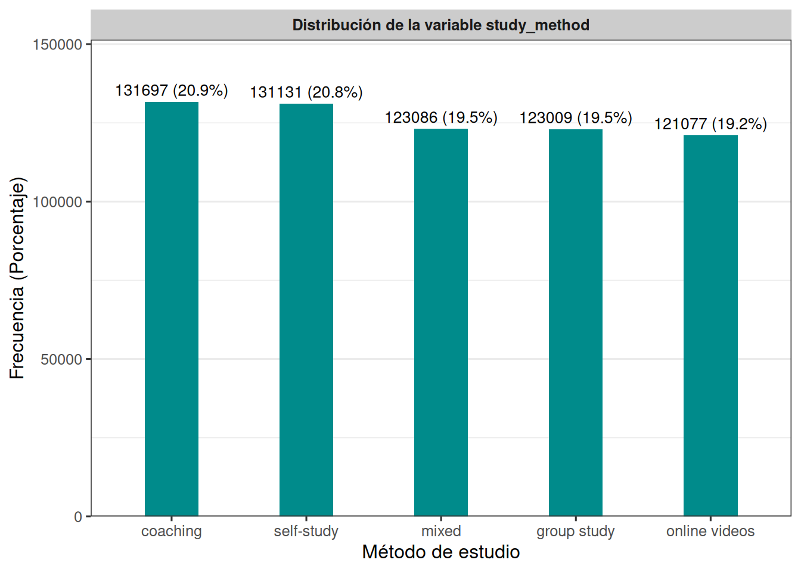
Las cinco categorías de study_method están bastante equilibradas entre sí: coaching (20,90%) y self-study (20,81%) son las más frecuentes, seguidas de cerca por mixed (19,54%), group study (19,53%) y online videos (19,22%). A diferencia de otras variables del dataset, aquí no se observa ninguna categoría dominante ni ninguna subrepresentada, lo que sugiere una distribución prácticamente uniforme de los métodos de estudio entre los estudiantes.
tabla_gender <- trainset %>%
count(gender, name = "Frecuencia") %>%
mutate(
Porcentaje = round(Frecuencia / sum(Frecuencia) * 100, 2),
Variable = "gender",
Categoria = as.character(gender)
) %>%
select(Variable, Categoria, Frecuencia, Porcentaje)
tabla_gender## Variable Categoria Frecuencia Porcentaje
## 1 gender female 208310 33.07
## 2 gender male 210593 33.43
## 3 gender other 211097 33.51tabla_gender <- trainset %>%
count(gender, name = "Frecuencia") %>%
mutate(
Porcentaje = round(Frecuencia / sum(Frecuencia) * 100, 1),
Etiqueta = paste0(Frecuencia, " (", Porcentaje, "%)")
)
ggplot(tabla_gender, aes(x = reorder(gender, -Frecuencia), y = Frecuencia)) +
geom_col(fill = "#008B8B", width = 0.3) +
geom_text(aes(label = Etiqueta), vjust = -0.5, size = 3) +
facet_wrap(~ "Distribución de la variable gender") +
scale_y_continuous(expand = expansion(mult = c(0, 0.15))) +
labs(x = "Género", y = "Frecuencia (Porcentaje)") +
theme_bw(base_size = 12) +
theme(
plot.title = element_blank(),
strip.background = element_rect(fill = "gray80", color = NA),
strip.text = element_text(face = "bold"),
panel.grid.major.x = element_blank()
)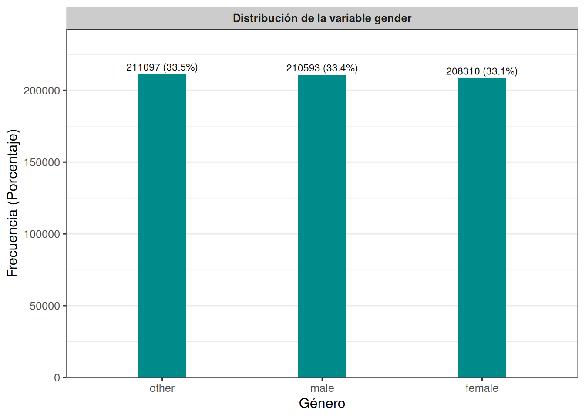
La variable gender presenta una distribución muy pareja entre sus tres categorías: other (33,51%), male (33,43%) y female (33,07%), con diferencias de apenas 0,4 puntos porcentuales entre ellas. No se observa ningún desbalance relevante.
tabla_internet_access <- trainset %>%
count(internet_access, name = "Frecuencia") %>%
mutate(
Porcentaje = round(Frecuencia / sum(Frecuencia) * 100, 2),
Variable = "internet_access",
Categoria = as.character(internet_access)
) %>%
select(Variable, Categoria, Frecuencia, Porcentaje)
tabla_internet_access## Variable Categoria Frecuencia Porcentaje
## 1 internet_access no 50577 8.03
## 2 internet_access yes 579423 91.97tabla_internet_access <- trainset %>%
count(internet_access, name = "Frecuencia") %>%
mutate(
Porcentaje = round(Frecuencia / sum(Frecuencia) * 100, 1),
Etiqueta = paste0(Frecuencia, " (", Porcentaje, "%)")
)
ggplot(tabla_internet_access, aes(x = reorder(internet_access, -Frecuencia), y = Frecuencia)) +
geom_col(fill = "#008B8B", width = 0.3) +
geom_text(aes(label = Etiqueta), vjust = -0.5, size = 3.5) +
facet_wrap(~ "Distribución de la variable internet_access") +
scale_y_continuous(expand = expansion(mult = c(0, 0.6))) +
labs(x = "Acceso a internet", y = "Frecuencia (Porcentaje)") +
theme_bw(base_size = 12) +
theme(
plot.title = element_blank(),
strip.background = element_rect(fill = "gray80", color = NA),
strip.text = element_text(face = "bold"),
panel.grid.major.x = element_blank()
)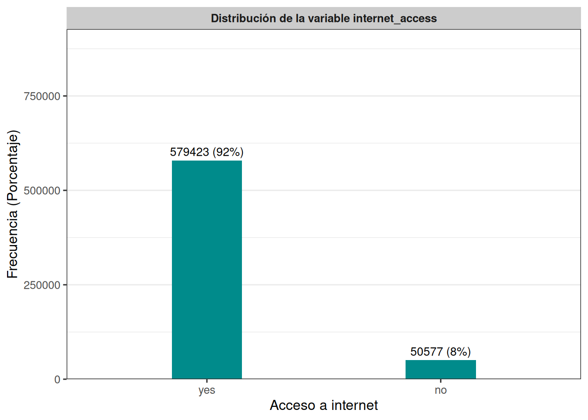
Aquí sí hay un desbalance marcado: el 91,97% de los estudiantes cuenta con acceso a internet (yes), mientras que solo el 8,03% no lo tiene (no). Esto podría influir en la robustez de futuras comparaciones entre ambos grupos, dado el tamaño tan reducido de quienes no cuentan con acceso.
tabla_course <- trainset %>%
count(course, name = "Frecuencia") %>%
mutate(
Porcentaje = round(Frecuencia / sum(Frecuencia) * 100, 2),
Variable = "course",
Categoria = as.character(course)
) %>%
select(Variable, Categoria, Frecuencia, Porcentaje)
tabla_course## Variable Categoria Frecuencia Porcentaje
## 1 course b.com 110932 17.61
## 2 course b.sc 111554 17.71
## 3 course b.tech 131236 20.83
## 4 course ba 61989 9.84
## 5 course bba 75644 12.01
## 6 course bca 88721 14.08
## 7 course diploma 49924 7.92tabla_course <- trainset %>%
count(course, name = "Frecuencia") %>%
mutate(
Porcentaje = round(Frecuencia / sum(Frecuencia) * 100, 1),
Etiqueta = paste0(Frecuencia, " (", Porcentaje, "%)")
)
ggplot(tabla_course, aes(x = reorder(course, -Frecuencia), y = Frecuencia)) +
geom_col(fill = "#008B8B", width = 0.45) +
geom_text(aes(label = Etiqueta), vjust = -0.5, size = 2.8) +
facet_wrap(~ "Distribución de la variable course") +
scale_y_continuous(expand = expansion(mult = c(0, 0.15))) +
labs(x = "Curso", y = "Frecuencia (Porcentaje)") +
theme_bw(base_size = 12) +
theme(
plot.title = element_blank(),
strip.background = element_rect(fill = "gray80", color = NA),
strip.text = element_text(face = "bold"),
panel.grid.major.x = element_blank()
)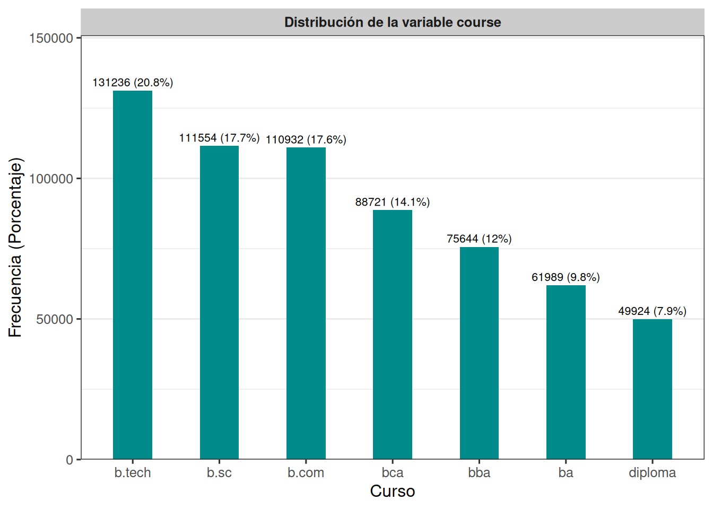
La categoría b.tech concentra la mayor proporción de estudiantes (20,83%), seguida por b.sc (17,71%) y b.com (17,61%). En conjunto, estas tres representan cerca del 56% del total. En el otro extremo, diploma es la categoría menos representada (7,92%), seguida por ba (9,84%). A diferencia de internet_access, aquí el desbalance es más moderado, con 7 categorías que oscilan entre el 8% y el 21%.
tabla_sleep_quality <- trainset %>%
count(sleep_quality, name = "Frecuencia") %>%
mutate(
Porcentaje = round(Frecuencia / sum(Frecuencia) * 100, 2),
Variable = "sleep_quality",
Categoria = as.character(sleep_quality)
) %>%
select(Variable, Categoria, Frecuencia, Porcentaje)
tabla_sleep_quality## Variable Categoria Frecuencia Porcentaje
## 1 sleep_quality average 203236 32.26
## 2 sleep_quality good 213089 33.82
## 3 sleep_quality poor 213675 33.92tabla_sleep_quality <- trainset %>%
count(sleep_quality, name = "Frecuencia") %>%
mutate(
Porcentaje = round(Frecuencia / sum(Frecuencia) * 100, 1),
Etiqueta = paste0(Frecuencia, " (", Porcentaje, "%)")
)
ggplot(tabla_sleep_quality, aes(x = reorder(sleep_quality, -Frecuencia), y = Frecuencia)) +
geom_col(fill = "#008B8B", width = 0.3) +
geom_text(aes(label = Etiqueta), vjust = -0.5, size = 3.5) +
facet_wrap(~ "Distribución de la variable sleep_quality") +
scale_y_continuous(expand = expansion(mult = c(0, 0.15))) +
labs(x = "Calidad del sueño", y = "Frecuencia (Porcentaje)") +
theme_bw(base_size = 12) +
theme(
plot.title = element_blank(),
strip.background = element_rect(fill = "gray80", color = NA),
strip.text = element_text(face = "bold"),
panel.grid.major.x = element_blank()
)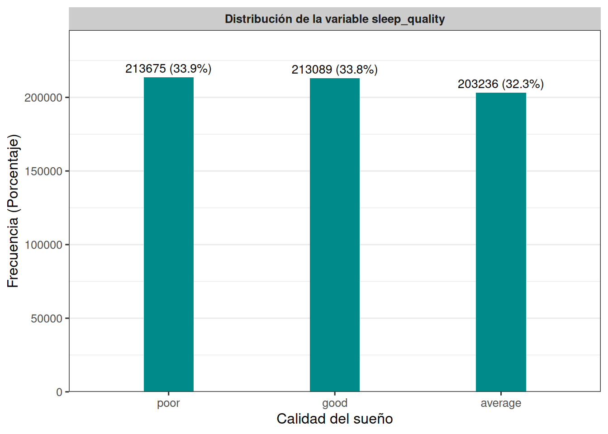
Las tres categorías de sleep_quality están distribuidas de forma casi idéntica: poor (33,92%), good (33,82%) y average (32,26%), con una diferencia máxima de apenas 1,7 puntos porcentuales entre ellas. No se evidencia ningún patrón de concentración hacia una categoría en particular.
tabla_facility_rating <- trainset %>%
count(facility_rating, name = "Frecuencia") %>%
mutate(
Porcentaje = round(Frecuencia / sum(Frecuencia) * 100, 2),
Variable = "facility_rating",
Categoria = as.character(facility_rating)
) %>%
select(Variable, Categoria, Frecuencia, Porcentaje)
tabla_facility_rating## Variable Categoria Frecuencia Porcentaje
## 1 facility_rating high 203540 32.31
## 2 facility_rating low 212378 33.71
## 3 facility_rating medium 214082 33.98tabla_facility_rating <- trainset %>%
count(facility_rating, name = "Frecuencia") %>%
mutate(
Porcentaje = round(Frecuencia / sum(Frecuencia) * 100, 1),
Etiqueta = paste0(Frecuencia, " (", Porcentaje, "%)")
)
ggplot(tabla_facility_rating, aes(x = reorder(facility_rating, -Frecuencia), y = Frecuencia)) +
geom_col(fill = "#008B8B", width = 0.3) +
geom_text(aes(label = Etiqueta), vjust = -0.5, size = 3.5) +
facet_wrap(~ "Distribución de la variable facility_rating") +
scale_y_continuous(expand = expansion(mult = c(0, 0.15))) +
labs(x = "Calificación de instalaciones", y = "Frecuencia (Porcentaje)") +
theme_bw(base_size = 12) +
theme(
plot.title = element_blank(),
strip.background = element_rect(fill = "gray80", color = NA),
strip.text = element_text(face = "bold"),
panel.grid.major.x = element_blank()
)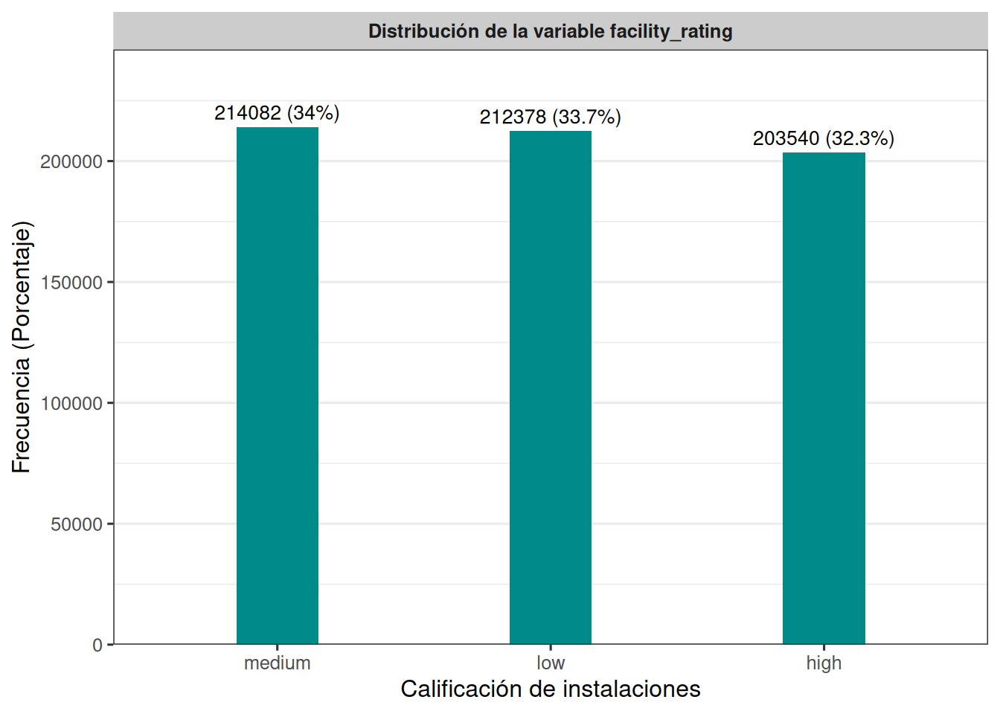
De forma similar a sleep_quality, las tres categorías de facility_rating se reparten de manera equilibrada: medium (33,98%), low (33,71%) y high (32,31%), sin ninguna diferencia relevante entre ellas.
tabla_exam_difficulty <- trainset %>%
count(exam_difficulty, name = "Frecuencia") %>%
mutate(
Porcentaje = round(Frecuencia / sum(Frecuencia) * 100, 2),
Variable = "exam_difficulty",
Categoria = as.character(exam_difficulty)
) %>%
select(Variable, Categoria, Frecuencia, Porcentaje)
tabla_exam_difficulty## Variable Categoria Frecuencia Porcentaje
## 1 exam_difficulty easy 176540 28.02
## 2 exam_difficulty hard 99478 15.79
## 3 exam_difficulty moderate 353982 56.19tabla_exam_difficulty <- trainset %>%
count(exam_difficulty, name = "Frecuencia") %>%
mutate(
Porcentaje = round(Frecuencia / sum(Frecuencia) * 100, 1),
Etiqueta = paste0(Frecuencia, " (", Porcentaje, "%)")
)
ggplot(tabla_exam_difficulty, aes(x = reorder(exam_difficulty, -Frecuencia), y = Frecuencia)) +
geom_col(fill = "#008B8B", width = 0.3) +
geom_text(aes(label = Etiqueta), vjust = -0.5, size = 3.5) +
facet_wrap(~ "Distribución de la variable exam_difficulty") +
scale_y_continuous(expand = expansion(mult = c(0, 0.15))) +
labs(x = "Dificultad del examen", y = "Frecuencia (Porcentaje)") +
theme_bw(base_size = 12) +
theme(
plot.title = element_blank(),
strip.background = element_rect(fill = "gray80", color = NA),
strip.text = element_text(face = "bold"),
panel.grid.major.x = element_blank()
)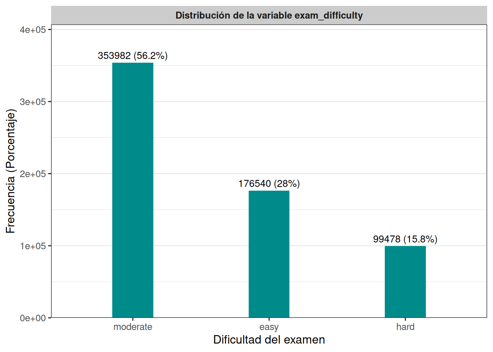
Esta es la variable categórica con mayor desbalance después de internet_access: la categoría moderate concentra más de la mitad de las observaciones (56,19%), mientras que easy representa el 28,02% y hard apenas el 15,79%. Esto sugiere que la mayoría de los exámenes fueron catalogados con una dificultad intermedia, y muy pocos como difíciles.
1.3 Análisis exploratorio bivariado
A continuación, analizaremos la relación entre la variable objetivo exam_score y las variables numéricas independientes, con el fin de identificar posibles patrones, tendencias y asociaciones que puedan ser útiles para la construcción de modelos.
## [1] 0.01047241# Diagrama de dispersión: age vs exam_score
trainset %>%
ggplot(aes(x = age, y = exam_score)) +
geom_point(alpha = 0.4, color = "#1E90FF") +
geom_smooth(method = "lm", formula = y ~ x, se = FALSE, color = "red") +
labs(
x = "Edad media",
y = "Calificación media del examen"
) +
theme_bw() +
facet_grid(. ~ "Dispersión entre la edad media y la calificación de los exámenes")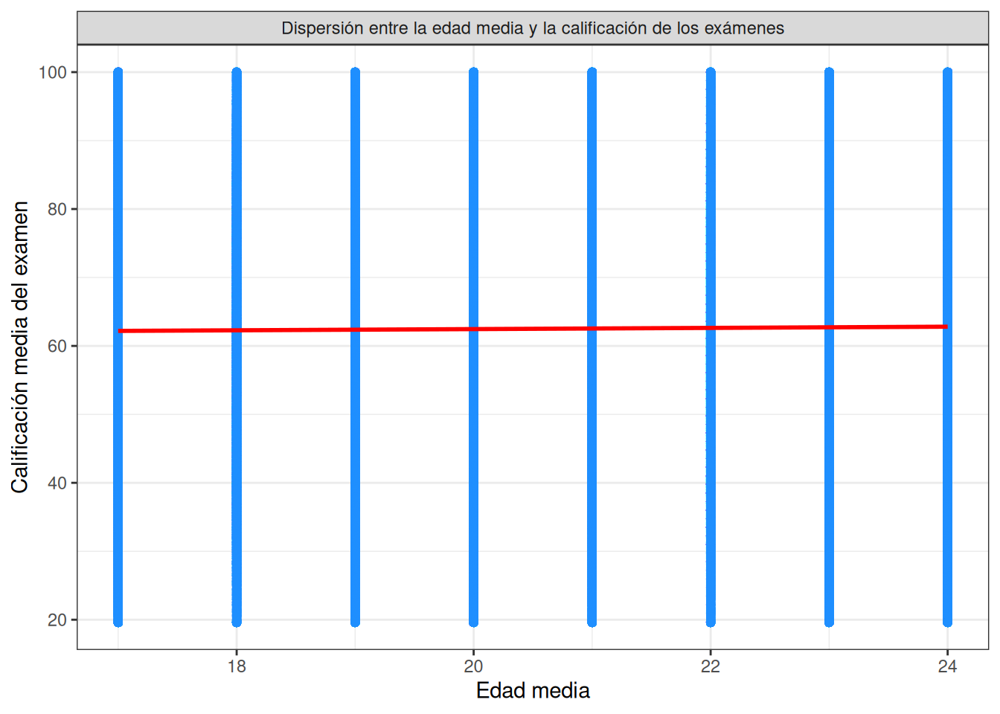
El diagrama de dispersión muestra que la calificación del examen se distribuye de forma similar en todas las edades (17 a 24 años), con puntos que cubren prácticamente todo el rango de 20 a 100 puntos en cada grupo etario. La línea de tendencia es casi plana, lo que sugiere que no existe una relación lineal relevante entre la edad y el desempeño académico: los estudiantes más jóvenes y los mayores obtienen calificaciones igual de variadas.
# Diagrama de dispersión: study_hours vs exam_score
trainset %>%
ggplot(aes(x = study_hours, y = exam_score)) +
geom_point(alpha = 0.4, color = "#1E90FF") +
geom_smooth(method = "lm", formula = y ~ x, se = FALSE, color = "red") +
labs(
x = "Horas de estudio media",
y = "Calificación media del examen"
) +
theme_bw() +
facet_grid(. ~ "Dispersión entre las horas de estudio media y la calificación de los exámenes")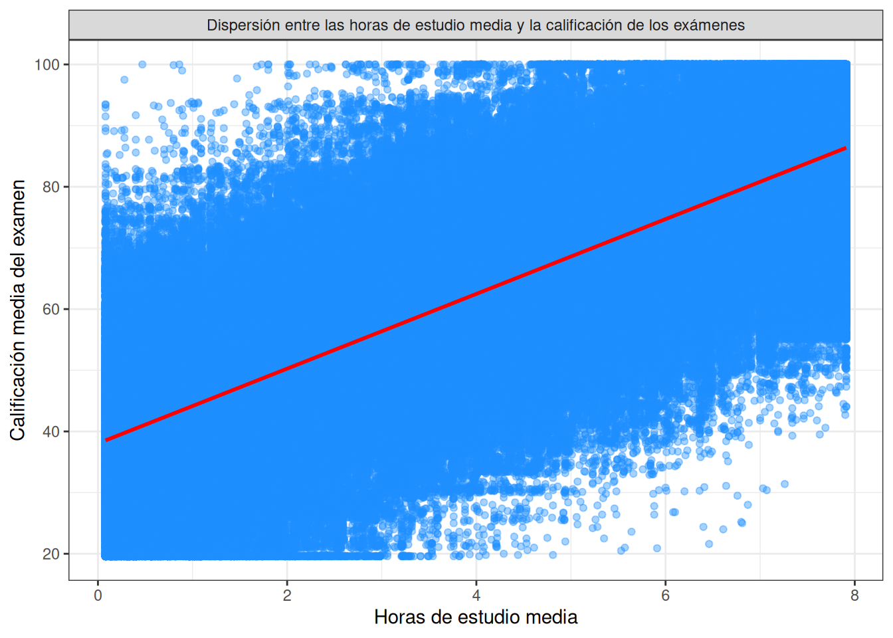
# Diagrama de dispersión: class_attendance vs exam_score
trainset %>%
ggplot(aes(x = class_attendance, y = exam_score)) +
geom_point(alpha = 0.4, color = "#1E90FF") +
geom_smooth(method = "lm", formula = y ~ x, se = FALSE, color = "red") +
labs(
x = "asistencia a clases media",
y = "Calificación media del examen"
) +
theme_bw() +
facet_grid(. ~ "Dispersión entre la asistencia a clases media y la calificación de los exámenes")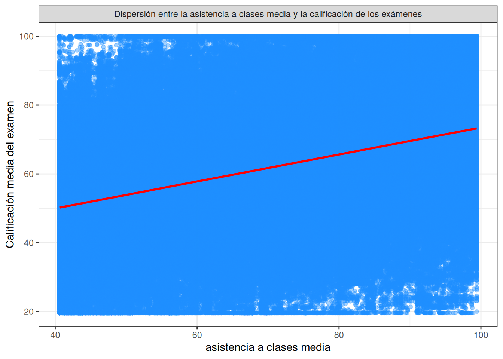
# Diagrama de dispersión: sleep_hours vs exam_score
trainset %>%
ggplot(aes(x = sleep_hours, y = exam_score)) +
geom_point(alpha = 0.4, color = "#1E90FF") +
geom_smooth(method = "lm", formula = y ~ x, se = FALSE, color = "red") +
labs(
x = "horas de sueño media",
y = "Calificación media del examen"
) +
theme_bw() +
facet_grid(. ~ "Dispersión horas de sueño media y la calificación de los exámenes")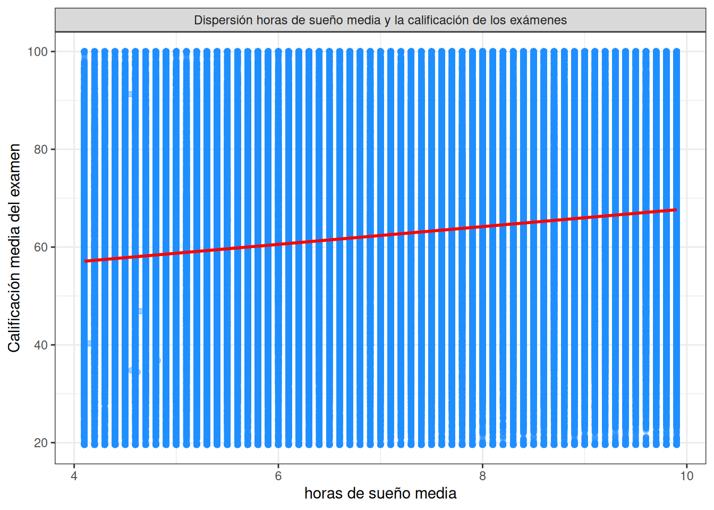